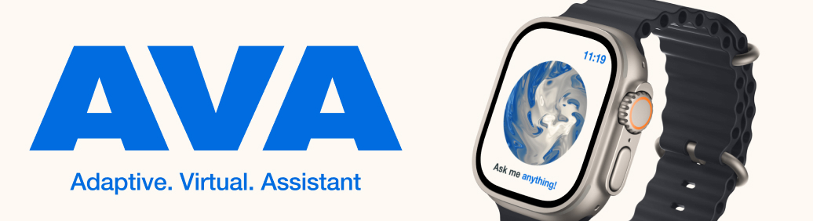
PROJECT SPECIFICATIONS
-
The time it took for this project was 3 Weeks.
-
Software used for this project: Figma and Visual Studio Code
-
This was a user interface project that created a smartwatch app.
-
The target audience was 16–25 year olds.
THE BRIEF
We were tasked with designing three smartwatch app screens, supported by a style guide, brand, and wireframes. The final submission should include high-resolution mockups.
INTRODUCTION
AVA (Adaptive Virtual Assistant) is a smartwatch app design for people who needed help without pulling out their phone, especially when they’re driving, exercising or running late. Most of the apps on a smartwatch are built for a single category, like fitness, music or messaging. But the difference with my app is that it fills the gap of unification, working as an assistant that displays information in an accessible, glanceable way, whilst feeling alive in its design. This matters because a smartwatch is a tiny device that requires your full attention, If the content isn’t readable or immediate. It fails to do the one job a watch does best, help you in the moment.
CONSTRAINTS
The brief required 3 or more screens, a style guide and high resolution mockups. And we were given three weeks to do this, so I used Figma to create the UI and prototype it, and with the use of JavaScript and AI, it allowed me to explore a Balatro inspired background quickly without the need for learning GLSL, the programming language used to create it.
PROCESS
I started by doing some research into existing smartwatch apps, Apps like Apple’s workout, Spotify and Outlook, through which I found a shared pattern of glanceability, short interactions and a clear hierarchy. I used this research in my ideation for the app, sketching layouts and choosing type that had large touch areas, minimal steps and readability. I wanted the app to feel alive during it’s process of being idle, to listening and then thinking. This led to a consistent swirl contained within a circle that held attention on a smaller screen.
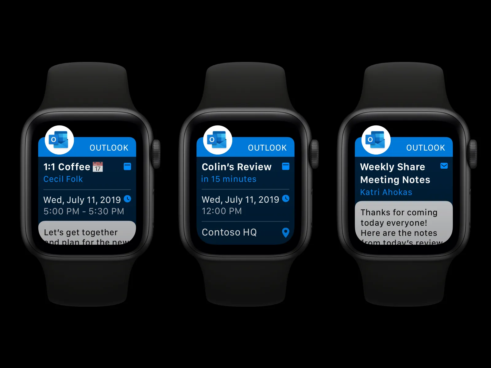
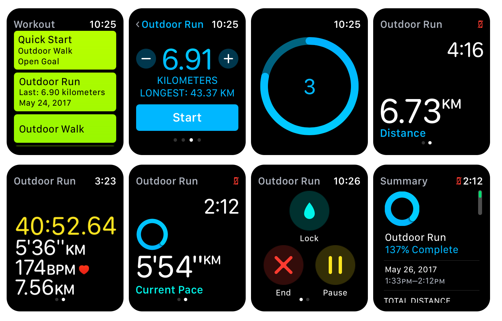
For the identity, I thought about how the brain works, with Neurochemicals being used for each feeling, This inspired me to make the design similar to the look of chemicals. I was inspired by Balatro, An online card game with a swirl shader as its background, This motion helped to convey the “alive” aspect of the app. But it only worked when it didn’t fight legibility, so I ensured that everything was accessible and followed proper standards. I had received feedback that highlighted missing actions, So I expanded the concept screens to show the output of those screens, so for example, if you asked for directions, AVA would give you directions. I later refined the UI by simplifying backgrounds, ensuring alignments were correct, and ensuring everything was in the right place.
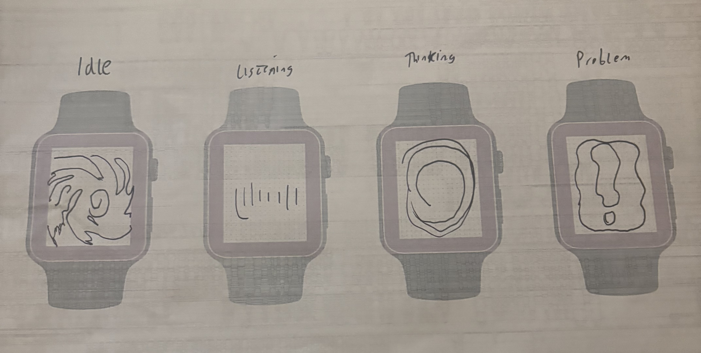
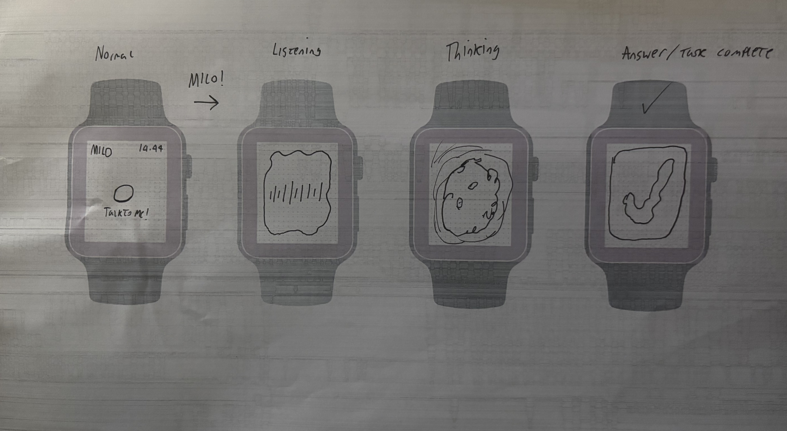
OUTCOMES
In the end, I delivered 13 Unique screens with variants, a style guide and high quality mockups. The app felt cohesive, the typography is bold and legible, and the system supports real scenarios like navigation, scheduling, messaging and music. I reframed the project later to show a main scenario, to fully express what it was made for, and this scenario was something you may experience from time to time, and that was being late whilst driving and needing to check your phone. Something that can be seen here:
REFLECTION
I’m very happy with how this project went, and In the time given I’m proud that I pushed myself, I learned from this to define the core user’s journey earlier, to validate the app with some user testing. This project helped me develop my accessibility skills within design, I now prioritise accessibility over aesthetic. I now also treat motion graphics as a tool that should support usability, not compete with it.
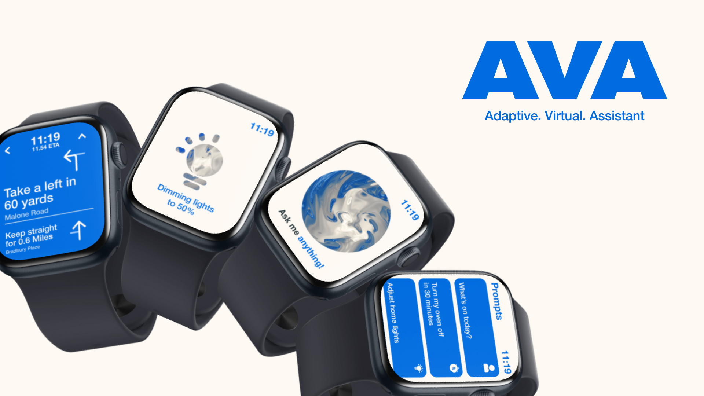
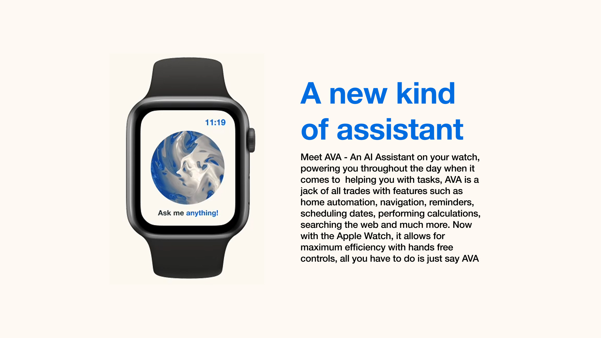
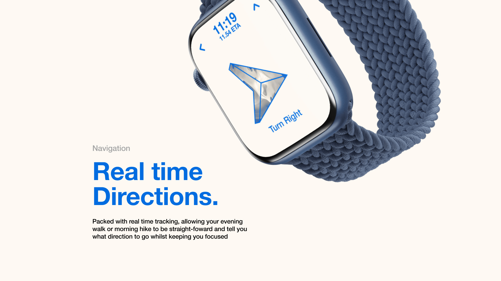
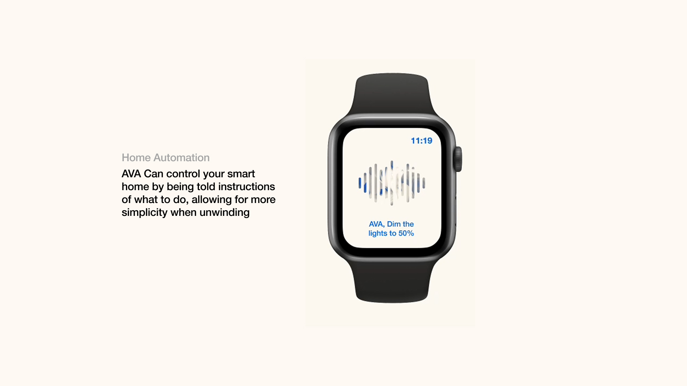
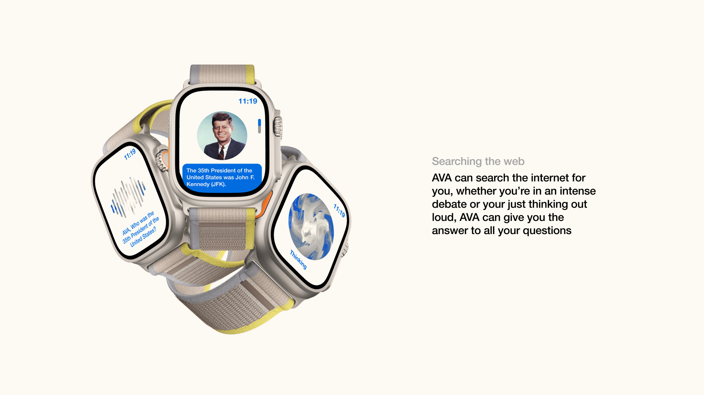
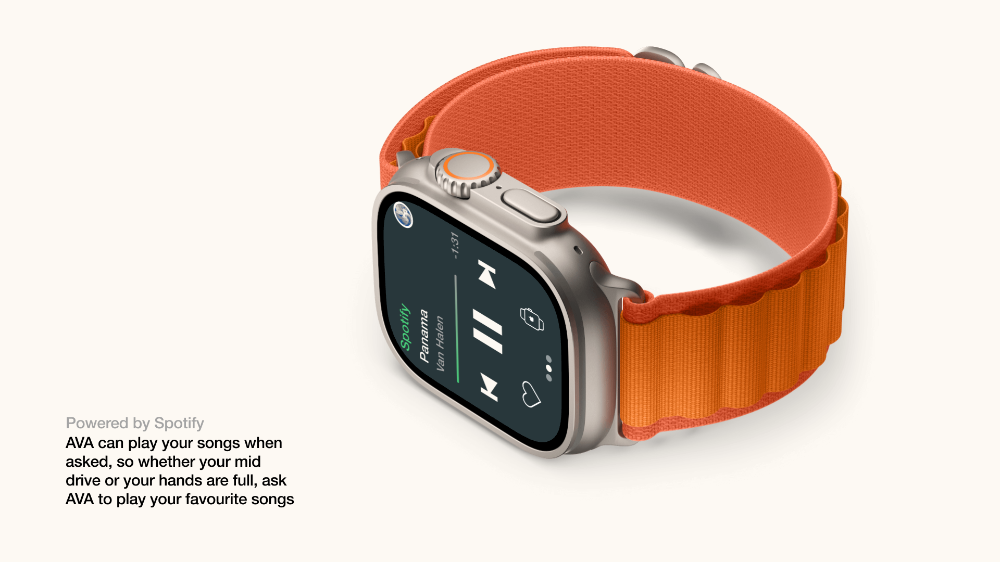